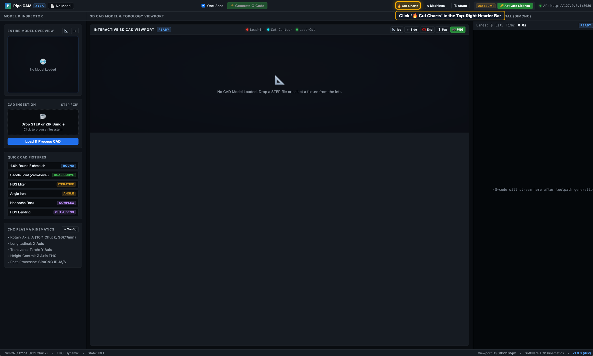
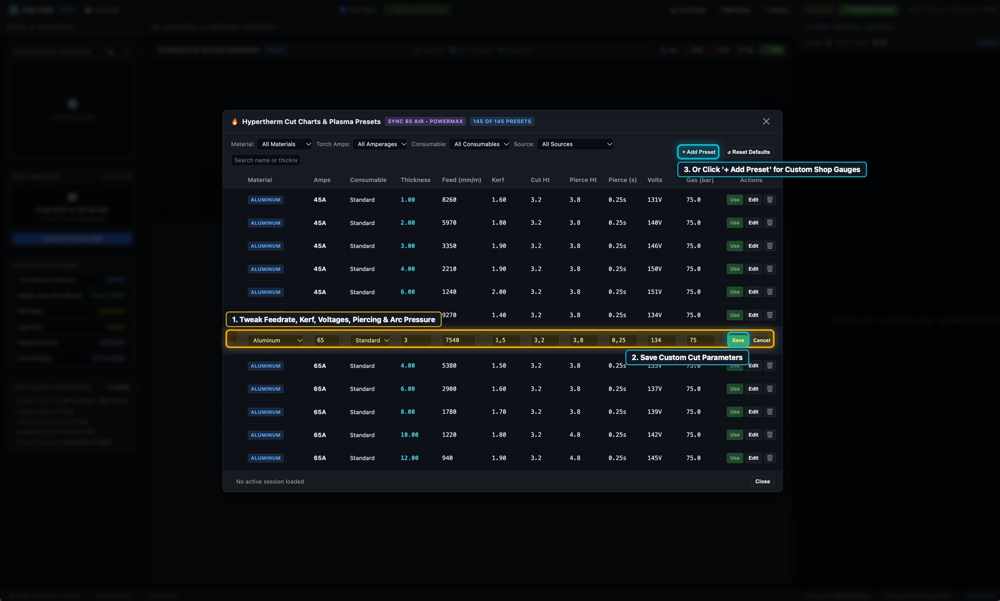
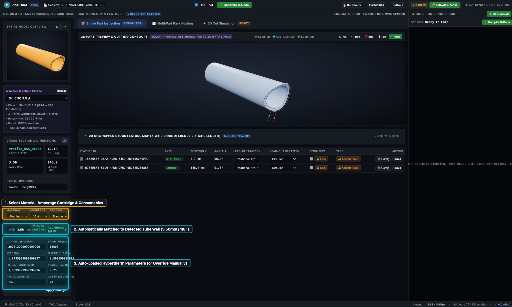
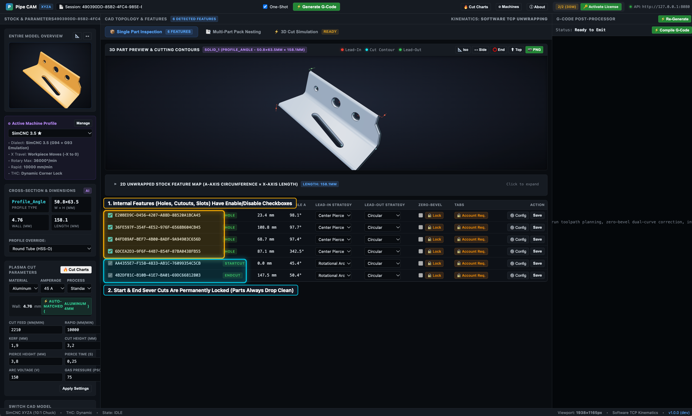

How to utilize RotaryCAM’s built-in Hypertherm plasma cut charts (Powermax 45XP/65/85/Sync), match cut parameters automatically to detected STEP wall thickness, create and edit custom shop presets, and selectively toggle holes, slots, or cutouts without touching CAD.
Dialing in the correct plasma torch feedrate, arc transfer voltage, pierce delay, and kerf width is the difference between dross-free, weld-ready tube joints and scrap metal. RotaryCAM eliminates trial-and-error by integrating 552 built-in Hypertherm Powermax 45/65/85/105 SYNC Rev 4 (810500MU) cut presets directly into the CAM environment—covering Standard Best Quality, Standard High Prod, FineCut High Speed, and FineCut Low Speed processes in both Metric and Imperial units across Mild Steel, Stainless Steel, and Aluminum. When you drop a 3D CAD STEP file onto the table, RotaryCAM measures the exact wall thickness directly from your 3D solid and pairs it with the manufacturer cut chart—loading optimal cut speed, arc voltage, pierce height, and torch air pressure automatically with smart cartridge recommendation for thin-wall vs. thick-wall stock.
Need to tune settings for worn consumables, custom shop gauges, or high-speed production runs? You can edit any parameter inline or add unlimited custom presets. Furthermore, when working on prototypes or custom fabrications where certain mounting holes or slots should be omitted without waiting for CAD revisions, RotaryCAM provides per-feature enable/disable toggles right in the single-part feature table—instantly updating the 3D toolpath, reducing the pierce count, and recompiling G-code on the fly while keeping structural sever cuts permanently locked.
The Cut Charts Manager is accessible from anywhere in RotaryCAM—whether you are inspecting an entire 3D assembly, dialing in lead-ins on a single tube, or packing multi-part nests across raw stock sticks.
Look at the top-right header bar in RotaryCAM, immediately next to the ⓘ About button.
Click the 🔥 Cut Charts button.
This opens the full Cut Charts Manager modal, providing instant access to all factory presets, custom shop charts, and live search filters without unloading your active CAD model or resetting toolpaths.
Step 1 — Clicking '🔥 Cut Charts' in the top-right header bar🔍 Click image to enlarge

Step 02
Browse & Filter the 552 Factory Hypertherm Cut Charts
RotaryCAM ships with a comprehensive library of 552 factory cut presets derived directly from official Hypertherm cut charts for the Powermax 45/65/85/105 SYNC Rev 4 (810500MU) platform.
Material Filter: Switch seamlessly between Mild Steel, Stainless Steel, and Aluminum.
Amperage & Consumables: Filter by torch cartridge (45A, 65A, 85A, 105A) and process type (Standard Best Quality, Standard High Prod, FineCut High Speed, or FineCut Low Speed with smart thin-wall cartridge recommendations).
Source & Units: Toggle between Factory manufacturer presets and your shop's own Custom tuned charts, with full support for Metric (mm, mm/min) and Imperial (in, IPM) units.
Complete Cutting Specs: Each chart entry provides torch feedrate, recommended arc voltage for Torch Height Control (THC), kerf width compensation, pierce height, cut height, pierce dwell time (seconds), and plasma air pressure (PSI).
Step 2 — Browsing and filtering the 552 factory Hypertherm cut charts table🔍 Click image to enlarge
Step 03
Edit Parameters Inline or Add Custom Shop Presets
Every shop table behaves slightly differently depending on torch air quality, ground clamp placement, and table rigidity. RotaryCAM allows fabricators to fine-tune any cut preset or define custom shop profiles.
Inline Editing: Double-click or click into any cell in a cut chart row—such as Cut Speed, Kerf Width, Arc Voltage, or Pierce Delay. Adjust the value to match your torch setup and click the Save button on that row.
Add Custom Presets: To store settings for non-standard wall thicknesses, specialized alloys (such as 4130 chromoly), or proprietary consumables, click the + Add Preset button in the top-right header of the modal.
Persistent Storage: Custom presets and edited values are stored locally in persistent storage, remaining available across browser refreshes and application restarts.
Step 3 — Editing cut chart row parameters inline or creating custom shop presets🔍 Click image to enlarge

Step 04
Inspect Automatic Wall-Thickness Matching
When a STEP file is loaded, RotaryCAM reads the inner and outer walls of the tube solid to determine its exact nominal wall thickness (for example, 3.56 mm / 1/8").
In the left sidebar under Cross-Section & Dimensions, locate the 3.56mm / 1/8" wall thickness badge.
RotaryCAM automatically queries the cut chart database and binds the matching Hypertherm preset to the cutting session—populating the Feedrate (2850 mm/min), Kerf Compensation (1.25 mm), Arc Voltage (128 V), and Pierce Delay (0.4 s).
Manual Override: Need to cut 1/8" wall tube at lower amperage (e.g. 45A FineCut instead of 65A standard)? Simply select an alternative preset from the dropdown menu, or click the reset icon to snap back to the auto-detected baseline.
Step 4 — Automatic wall-thickness matching badge and cut parameters in the left sidebar🔍 Click image to enlarge

Step 05
Toggle Contours in Single Part Inspection
In real-world tube fabrication, models often include holes meant for hand-drilling post-assembly, clearance slots for optional accessories, or alignment features that should not be cut during a specific production batch. Returning to CAD to suppress or delete features is slow and error-prone.
In Single Part Inspection, look at the feature table below the 3D viewport. Every detected feature is listed with its contour type, axial position, and geometry dimensions.
Feature Enable/Disable Checkboxes: Each internal feature (HOLE, SLOT, CUTOUT, SCRIBE) has an interactive checkbox in the left-hand column. Unchecking a box instantly omits that cut from production.
Permanent Sever Cut Lock: Notice that the tube severance cuts (STARTCUT and ENDCUT) have locked checkmarks with a lock badge. Sever cuts cannot be accidentally unchecked, guaranteeing that cut parts always drop cleanly from the raw tube stick.
Step 5 — Feature table checkboxes for internal cutouts with locked cutoff cuts🔍 Click image to enlarge

Step 06
Verify Omitted Toolpaths & Live G-Code
When you uncheck an internal feature, RotaryCAM immediately updates the entire cutting pipeline without requiring a manual re-generation step:
3D Viewport Toolpath: The cut path for the disabled feature disappears from the 3D preview. Zero lead-in, cut contour, or lead-out motions are plotted for that geometry.
Pierce Counter & Machine Time: The total pierce count in the kinematics bar updates immediately (for example, reducing from 5 to 4 pierces). Cycle time estimates update accordingly, saving plasma gas, nozzle wear, and machine cycle time.
Live Recompiled G-Code: The G-code viewer on the right automatically recompiles. The rapid plunge (G00), torch ignition (M03), pierce dwell (G04), cutting feed (G01), and torch shutoff (M05) commands for the omitted feature are completely eliminated from the exported file.
Step 6 — Omitted feature removed from 3D toolpath, pierce count reduced, and G-code updated🔍 Click image to enlarge